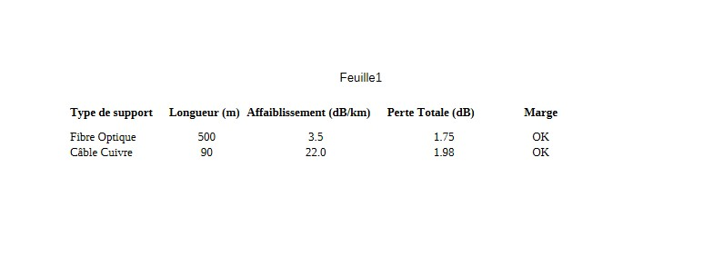
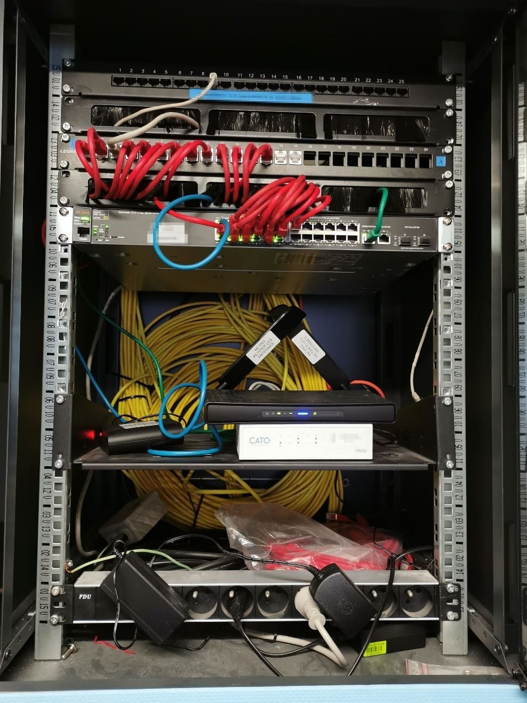

1. Contexte et objectif
L’objectif de cette SAÉ était de concevoir et mettre en œuvre une infrastructure en reliant plusieurs compétences du BUT R&T. Il ne s’agissait pas seulement de configurer un réseau, mais aussi de comprendre le support de transmission, d’évaluer sa faisabilité et de justifier les choix techniques réalisés.
2. Mon rôle dans la SAÉ
Dans cette SAÉ, j’ai participé à l’analyse technique de la liaison, à la préparation de la partie câblage et à la réflexion sur l’organisation réseau. Mon rôle a surtout consisté à faire le lien entre les contraintes théoriques vues en cours et leur mise en application concrète dans le projet.
3. Compétences et apprentissages critiques mobilisés
Cette SAÉ mobilise principalement les apprentissages critiques suivants :
- AC12.02 : caractériser un système de transmission et comprendre son fonctionnement ;
- AC11.03 : configurer les fonctions de base du réseau local ;
- AC12.03 : déployer des supports de transmission.
Elle m’a surtout permis de renforcer les compétences Connecter et Administrer, car il fallait à la fois comprendre la liaison physique et construire une solution réseau fonctionnelle.
4. Tâches réalisées
- Étude des contraintes de transmission et du support à utiliser ;
- Analyse théorique de la liaison à partir des notions vues en mathématiques et télécommunications ;
- Participation à la mise en œuvre du câblage ;
- Réflexion sur l’adressage et l’organisation logique du réseau ;
- Vérification de la cohérence entre les résultats théoriques et la mise en pratique.
5. Traces du projet

Ce tableau présente les calculs d’affaiblissement pour différents supports de transmission (fibre optique et câble cuivre). Il montre ma capacité à analyser une liaison et à vérifier sa faisabilité en fonction des pertes.

Cette photo montre la mise en œuvre concrète du réseau avec le câblage et les équipements. Elle illustre ma capacité à passer de l’analyse théorique à une installation réelle.
6. Analyse de ma progression
Cette SAÉ m’a permis de mieux comprendre que le réseau ne commence pas seulement au moment où l’on configure une machine ou un équipement. Avant cela, il faut déjà vérifier que la liaison est réalisable, que le support choisi est adapté et que les contraintes physiques ont bien été prises en compte.
J’ai progressé dans ma capacité à relier plusieurs disciplines entre elles. Au lieu de voir les mathématiques, les télécommunications et le réseau comme des matières séparées, j’ai compris qu’elles participent à une même logique de conception technique.
7. Difficultés rencontrées
La principale difficulté a été de passer de la théorie à la pratique. Les calculs permettent de prévoir un comportement, mais la réalité du terrain introduit toujours des écarts : pertes réelles, contraintes matérielles, qualité du câblage ou imprécisions de mise en œuvre.
8. Ce que j’ai mis en place pour les surmonter
Pour surmonter ces difficultés, j’ai comparé les résultats attendus avec les observations réalisées. Cela m’a obligé à relire les notions théoriques, à revoir certains calculs et à mieux comprendre l’origine des écarts. J’ai ainsi appris à ne pas considérer la théorie comme une fin en soi, mais comme un outil d’aide à la décision.
9. Autoévaluation
Je considère que cette SAÉ a renforcé ma compréhension globale d’une infrastructure. J’ai mieux saisi l’importance du support physique et son impact sur le fonctionnement du réseau. Je pense avoir progressé dans ma capacité à analyser une situation technique dans son ensemble.
En revanche, je peux encore améliorer ma maîtrise de certains aspects de transmission et approfondir la justification technique de mes choix. Avec davantage de pratique, je serai plus à l’aise pour passer rapidement de l’analyse à la mise en œuvre.
10. Réinvestissement possible
Les acquis de cette SAÉ pourront être réutilisés dans d’autres contextes, notamment pour concevoir une infrastructure plus complexe, choisir un support adapté à une contrainte donnée ou justifier une architecture réseau dans un cadre professionnel.